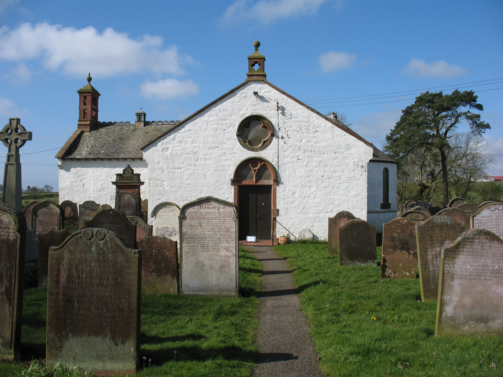

Home
The Visionary Cross Project began in the early 2010s as a collaborative initiative by Daniel Paul O’Donnell (University of Lethbridge), Roberto Rosselli Del Turco (University of Turin), Catherine Karkov (University of Leeds), Martin foys (University of Wisconsin-Madison), and Dot Porter (UPenn Library). The project emerged from a shared interest in developing a new kind of digital scholarly edition—one that not only preserved Old English texts but also integrated them meaningfully with cultural artifacts. Specifically, the project focuses on 3D visualizations of monumental stone crosses from Old English period, such as the Ruthwell and Bewcastle Crosses. These artifacts are significant not only for their inscriptions and iconography but also for their connection to Old English religious poetry, particularly the Dream of the Rood, which shares thematic and visual motifs with the carvings on these crosses. The goal of the Visionary Cross Project is to move beyond traditional print or static digital editions by linking these 3D models with annotated texts, translations, and scholarly commentary—creating a multimodal edition that facilitates deeper engagement. ISTI-CNR (visual computing group at the Italian national research center) collaborated with the partners of the project in its first main activities: the acquisition and processing of the 3D representation of the Ruthwell and Bewcastle.